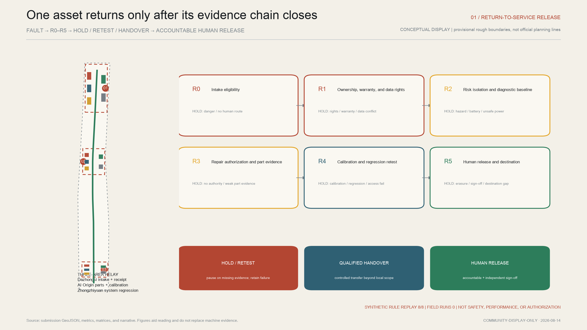
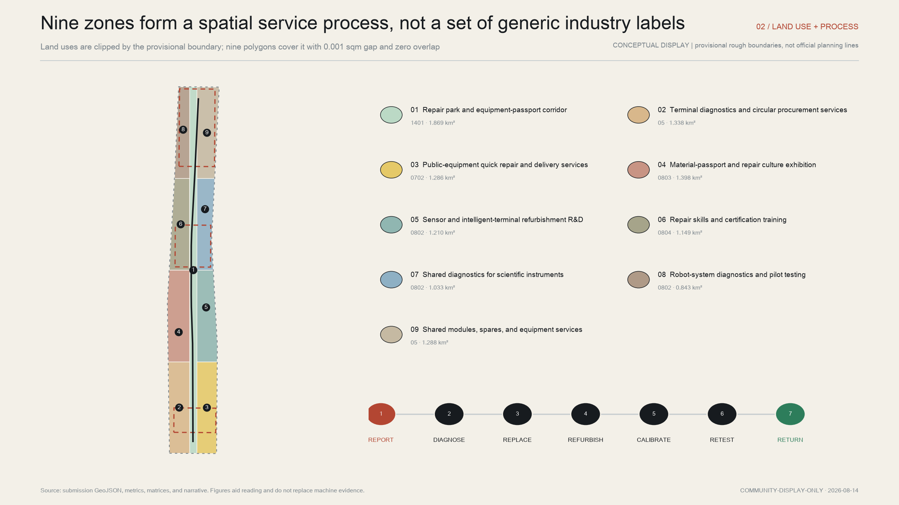
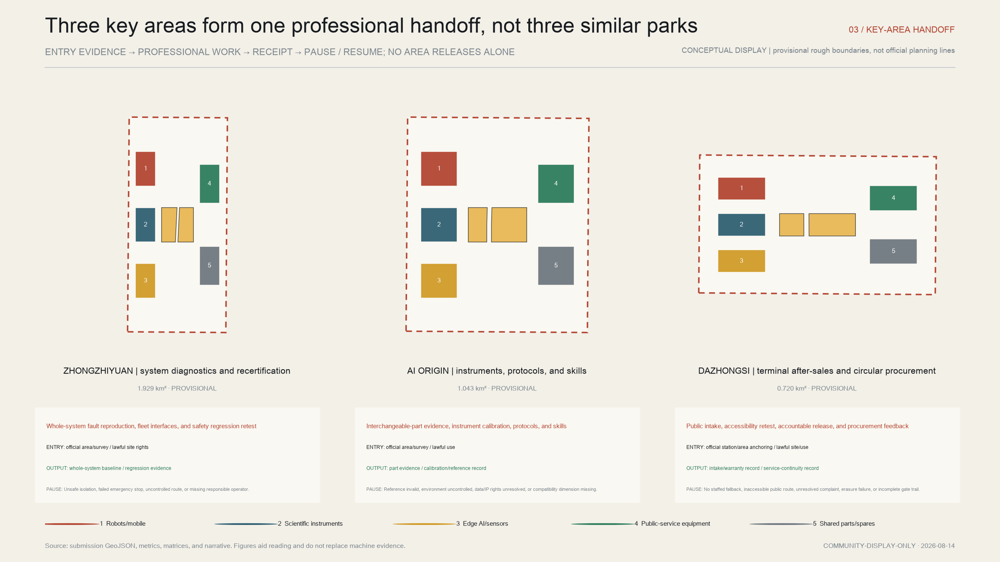
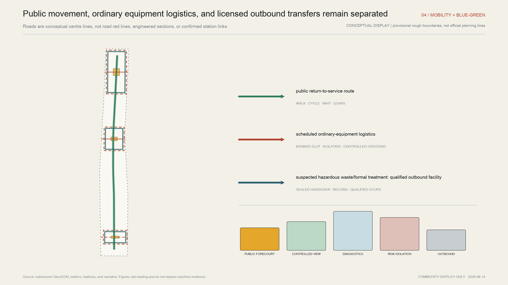
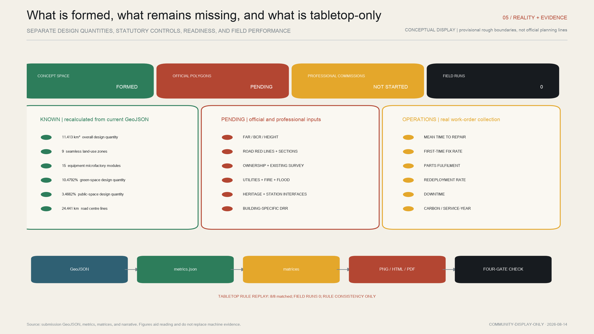

Return-to-service release chain
R0–R5 diverts a failed asset to hold, retest, qualified handover, or accountable human release; field runs remain zero.

Industrial infrastructure that returns urban AI equipment to accountable service
CONCEPTUAL DISPLAY | provisional rough boundaries, not official planning lines
A public-service robot starts at staffed intake in Dazhongsi, gains part, calibration, and rights evidence at AI Origin, receives whole-system regression at Zhongzhiyuan, and returns to Dazhongsi for accountable plus independent release. Missing evidence means HOLD; out-of-scope work means qualified handover.
R0–R5 diverts a failed asset to hold, retest, qualified handover, or accountable human release; field runs remain zero.

Industry strategy progresses through overall design to reviewable workstations.

Each area defines entry evidence, output receipt, pause condition, and recovery evidence; none releases alone.

Public routes, ordinary equipment logistics, and qualified outbound transfers remain separated.

Concept space is formed; official polygons are pending; professional commissions are not started; field runs are zero.

Task coverage: 23 announcement and Agent requirements are mapped in compliance_matrix.json; all 15 required design-depth items are complete.
Sources: 27 package records, nine GeoJSON files, R0–R5 contracts, a twelve-scenario responsibility matrix, and bilingual narrative. Tabletop replay 8/8; field runs 0.
Assumptions: the overall and three key-area boundaries remain provisional rough geometry. FAR, height, statutory coverage, road red lines, ownership, utilities, fire, flood, heritage, and station relationships await official data and professional review.